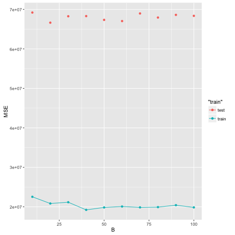

1 Money Ball: Who You Will Buy?
1.1 Individual Trees
data <- tbl_df(read.csv('MLB2008.csv')) data.train <- data[1:154, ] data.test <- data[155:dim(data)[1], ] 0
feature.names <- colnames(data)[6:length(data)] formula <- as.formula(paste('SALARY ~', paste(feature.names, collapse='+'))) rpart.model <- rpart(formula, data=data.train, method='anova') prp(rpart.model)

mse <- data.frame( prune=0, train=norm(predict(rpart.model) - data.train$SALARY, type="2"), test=norm(predict(rpart.model, data.test) - data.test$SALARY, type="2") ) for(prune in (1:10 / 10.)) { rpart.model.prune <- prune(rpart.model, cp=prune) mse <- rbind(mse, c( prune=prune, train=norm(predict(rpart.model.prune) - data.train$SALARY, type="2"), test=norm(predict(rpart.model.prune, data.test) - data.test$SALARY, type="2") )) } mse
| Prune | train | test |
| 0 | 36198240.8617805 | 72784943.1305674 |
| 0.1 | 44735392.6910594 | 74445712.3863091 |
| 0.2 | 44735392.6910594 | 74445712.3863091 |
| 0.3 | 52769875.8870473 | 73588157.3153948 |
| 0.4 | 52769875.8870473 | 73588157.3153948 |
| 0.5 | 52769875.8870473 | 73588157.3153948 |
| 0.6 | 52769875.8870473 | 73588157.3153948 |
| 0.7 | 52769875.8870473 | 73588157.3153948 |
| 0.8 | 52769875.8870473 | 73588157.3153948 |
| 0.9 | 52769875.8870473 | 73588157.3153948 |
| 1 | 52769875.8870473 | 73588157.3153948 |
Plotting the result
ggplot(mse) + geom_point(aes(x = prune, y = train, color='train')) + geom_line(aes(x = prune, y = train, color='train')) + geom_point(aes(x = prune, y = test, color='test')) + xlab("B cp") + ylab("MSE")

1.2 Random Forest
mse.forest <- data.frame(B=integer(), train=numeric(), test=numeric()) for(B in 10:100) { randomForest.model <- randomForest(formula, data=data.train, ntree=B) mse.forest <- rbind(mse.forest, data.frame( B=B, train=norm(predict(randomForest.model, data.train) - data.train$SALARY, type="2"), test=norm(predict(randomForest.model, data.test) - data.test$SALARY, type="2") )) } 0
ggplot(mse.forest) + geom_point(aes(x = B, y = train, color='train')) + geom_line(aes(x = B, y = train, color='train')) + geom_point(aes(x = B, y = test, color='test')) + xlab("B") + ylab("MSE")

Figure 3: MSE for random Forest
1.3 TODO part 3
2 TODO Tame Categorical Variables in Tree Regression
2.1.
\begin{align*} \sum_i (Y_i - f(X_i))^2 &= \sum_i Y_i^2 + \sum_s \sum_{X_i = s} f(s)^2 - 2 Y_i f(s) \\&= \sum_i Y_i^2 + \sum_s |\{X_i = s\}| [f(s)^2 - 2 \bar Y_s f(s)] \end{align*}\[ \sum_{L_k} \sum_{s \in L_k} |\{X_i = s\}| [\alpha_k^2 - 2 \bar Y_s \alpha_k] \] \[ \sum_{L_k} \alpha_k^2 (\sum_{s \in L_k} |\{X_i = s\}|) - 2 \alpha_k \sum_{s \in L_k} |\{X_i = s\}| \bar Y_s\]
\[\sum_{k} |L_k| (\alpha_k^2 - 2 \alpha_k avg(L_k))\]
\[ |\{X_i = u\}| [\alpha_k^2 - 2 \bar Y_u \alpha_k] \] \[ |\{X_i = v\}| [\alpha_{k'}^2 - 2 \bar Y_v \alpha_{k'}] \] \[ |\{X_i = w\}| [\alpha_k^2 - 2 \bar Y_w \alpha_k] \]
\[ |\{X_i = u\}| [\alpha_k^2 - 2 \bar Y_u \alpha_k] \] \[ |\{X_i = v\}| [\alpha_{k}^2 - 2 \bar Y_v \alpha_{k}] \] \[ |\{X_i = w\}| [\alpha_k^2 - 2 \bar Y_w \alpha_k] \]
2.2 \(K = 2\)
The set of partitions \((L_1, L_2)\) admits a one to one mapping to the set of functions \(\{0, 1\}^{\{1, \ldots M\}}\), so: \(\mathcal N_1 = 2^{M}\)
In this case, we know that \(L_1\) is of the form \(\{1, \ldots j\}\), so \(\mathcal N_2 = M\)
\(\frac{\mathcal N_2}{\mathcal N_1} = \frac{M}{2^M}\)
3 TODO Baggin and Random Forest
3.1
4 Explore the Boundary of RIP Conditions
4.1
\[\inner{Ax}{Ay} = \frac14 (\norm{Ax + Ay}^2 + \norm{Ax - Ay}^2\]